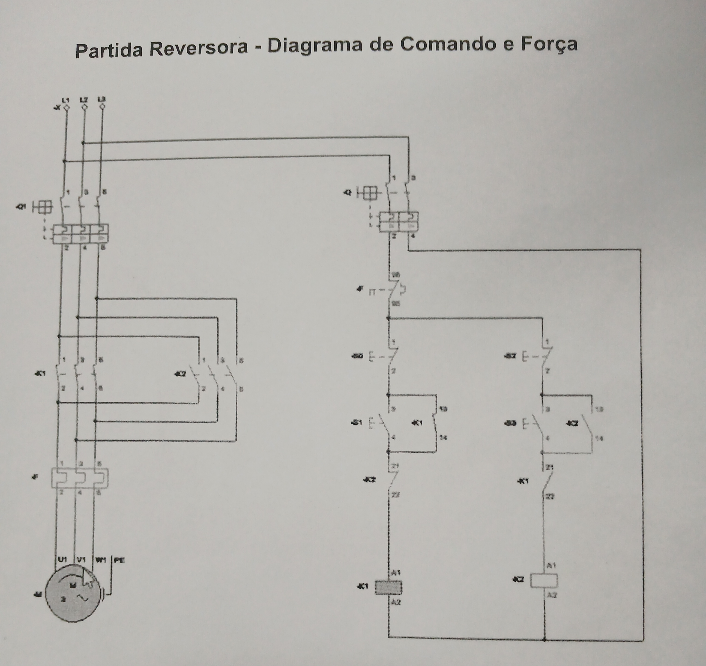

Teste
"Tutorial" ➔ Laboratório Digital ( Sesi Senai )
"Tutorial" ➔ Diagrama ( CADe SIMU )
Funcionamento:
O circuito possui um LED verde (H1) ligado diretamente entre os terminais +24 Vdc e 0 Vdc da fonte de alimentação.
Ao iniciar a simulação, a corrente elétrica percorre continuamente o circuito, alimentando o LED H1, que permanece aceso durante todo o funcionamento, pois não existem dispositivos de comando ou proteção interrompendo a circulação da corrente.
"Prática 1 - Acionando um LED com Botão" ➔ Laboratório Digital ( Sesi Senai )
"Prática 1 - Acionando um LED com Botão" ➔ Diagrama ( CADe SIMU )
Funcionamento:
O circuito utiliza um botão pulsador normalmente aberto (B1) para controlar o LED H1.
Em repouso, B1 permanece aberto por ação da mola interna, impedindo a circulação da corrente elétrica e mantendo o LED H1 apagado.
Ao pressionar B1, o contato 13-14 fecha, permitindo que a corrente percorra o circuito entre +24 Vdc e 0 Vdc, alimentando o LED H1, que acende enquanto o botão permanecer pressionado.
Ao liberar B1, o botão retorna automaticamente à posição de repouso por ação da mola interna. O contato 13-14 volta à condição normalmente aberta, interrompendo a alimentação do LED, que apaga.
"Prática 2 - Acionando um LED com Botão e Disjuntor" ➔ Laboratório Digital ( Sesi Senai )
"Prática 2 - Acionando um LED com Botão e Disjuntor" ➔ Diagrama ( CADe SIMU )
Funcionamento:
O circuito utiliza um disjuntor monofásico (D1) para proteção da alimentação e um botão pulsador normalmente aberto (B1) para comandar o LED H1.
Com D1 desligado, o circuito permanece desenergizado e o LED H1 permanece apagado.
Após ligar o disjuntor, a alimentação em 24 Vdc é restabelecida. Entretanto, como B1 permanece em repouso por ação da mola interna, seu contato continua aberto e o LED permanece apagado.
Ao pressionar B1, o contato 13-14 fecha, permitindo a circulação da corrente elétrica e alimentando o LED H1, que acende.
Ao liberar o botão, ele retorna automaticamente à posição de repouso por ação da mola interna. O contato volta à condição normalmente aberta e o LED H1 apaga.
"Prática 3 - Acionando dois LEDs (Botão NA e NF)" ➔ Laboratório Digital ( Sesi Senai )
"Prática 3 - Acionando dois LEDs (Botão NA e NF)" ➔ Diagrama ( CADe SIMU )
Funcionamento:
O circuito utiliza um disjuntor monofásico (D1), um botão pulsador (B1) com um contato normalmente aberto (13-14) e um contato normalmente fechado (21-22) para comandar dois LEDs.
Após ligar o disjuntor D1, o circuito é alimentado em 24 Vdc.
Em repouso, B1 permanece na posição normal por ação da mola interna. O contato 21-22 permanece fechado, alimentando o LED H1, que permanece aceso, enquanto o contato 13-14 permanece aberto, mantendo o LED H2 apagado.
Ao pressionar B1, o contato 21-22 abre, interrompendo a alimentação do LED H1, que apaga. Simultaneamente, o contato 13-14 fecha, permitindo a alimentação do LED H2, que acende.
Ao liberar B1, o botão retorna automaticamente à posição de repouso por ação da mola interna. Os contatos retornam às suas condições normais, fazendo com que o LED H1 volte a acender e o LED H2 apague.
"Prática 4 - Acionando um LED (Contator)" ➔ Laboratório Digital ( Sesi Senai )
"Prática 4 - Acionando um LED (Contator)" ➔ Diagrama ( CADe SIMU )
Funcionamento:
O circuito utiliza um disjuntor monofásico (D1), um botão de pulso normalmente aberto (B1), um contator (K1) e uma sinaleira (H1).
Após ligar o disjuntor D1, o circuito é energizado em 24 Vdc. Em repouso, o botão B1 permanece em sua posição normal, a bobina do contator K1 permanece desenergizada, seu contato auxiliar permanece aberto e a sinaleira H1 permanece apagada.
Ao pressionar B1, a bobina do contator K1 é energizada. O campo eletromagnético altera o estado de seu contato auxiliar normalmente aberto (13-14), alimentando a sinaleira H1, que acende enquanto o botão permanecer pressionado.
Ao liberar B1, o botão retorna automaticamente à posição de repouso por ação da mola interna. A alimentação da bobina de K1 é interrompida, seus contatos retornam às posições normais por ação da mola de retorno do contator e a sinaleira H1 apaga, retornando o circuito ao estado inicial.
"Prática 5 - Acionando dois LEDs (Contator)" ➔ Laboratório Digital ( Sesi Senai )
"Prática 5 - Acionando dois LEDs (Contator)" ➔ Diagrama ( CADe SIMU )
Funcionamento:
O circuito utiliza um disjuntor monofásico (D1), um botão de pulso normalmente aberto (B1), um contator (K1) e duas sinaleiras (H1 e H2), acionadas por contatos auxiliares normalmente fechado e normalmente aberto do contator.
Após ligar o disjuntor D1, o circuito é energizado em 24 Vdc. Em repouso, o botão B1 permanece em sua posição normal, a bobina do contator K1 permanece desenergizada, seus contatos permanecem nas posições normais, a sinaleira H1 permanece acesa, por estar ligada ao contato normalmente fechado (21-22), e a sinaleira H2 permanece apagada, por estar ligada ao contato normalmente aberto (13-14).
Ao pressionar B1, a bobina do contator K1 é energizada. O campo eletromagnético altera o estado de seus contatos auxiliares, abrindo o contato normalmente fechado (21-22) e fechando o contato normalmente aberto (13-14). Como consequência, a sinaleira H1 apaga e a sinaleira H2 acende, indicando que o contator foi energizado.
Ao liberar B1, o botão retorna automaticamente à posição de repouso por ação da mola interna. A alimentação da bobina de K1 é interrompida, seus contatos retornam às posições normais por ação da mola de retorno do contator. A sinaleira H2 apaga e a sinaleira H1 volta a acender, retornando o circuito ao estado inicial.
"Prática 6 - Contato de selo" ➔ Laboratório Digital ( Sesi Senai )
"Prática 6 - Contato de selo" ➔ Diagrama ( CADe SIMU )
Funcionamento:
O circuito utiliza um disjuntor monofásico (D1), um botão de parada normalmente fechado (B0), um botão de partida normalmente aberto (B1), um contator (K1) com contato de selo e uma sinaleira (H1).
Após ligar o disjuntor D1, o circuito é energizado em 24 Vdc. Em repouso, o botão B0 permanece fechado, o botão B1 permanece aberto, a bobina do contator K1 permanece desenergizada, seus contatos permanecem em suas posições normais e a sinaleira H1 permanece apagada.
Ao pressionar B1, a bobina do contator K1 é energizada. O campo eletromagnético altera o estado de seus contatos auxiliares, fechando o contato de selo (13-14), que mantém a alimentação da bobina após a liberação do botão, e fechando o contato normalmente aberto (53-54), alimentando a sinaleira H1, que permanece acesa enquanto K1 estiver energizado.
Ao liberar B1, o botão retorna automaticamente à posição de repouso por ação da mola interna. O contato de selo mantém a bobina de K1 energizada e, consequentemente, a sinaleira H1 permanece acesa.
Ao pressionar B0, a alimentação da bobina é interrompida. Seus contatos retornam às posições normais por ação da mola de retorno do contator, desfazendo o contato de selo e abrindo o contato (53-54). Como consequência, a sinaleira H1 apaga, retornando o circuito ao estado inicial.
"Prática 7 - Comando de Reversão" ➔ Laboratório Digital ( Sesi Senai )
"Prática 7 - Comando de Reversão" ➔ Diagrama ( CADe SIMU )
Funcionamento:
O circuito utiliza um disjuntor monofásico (D1), um botão de parada normalmente fechado (B0), dois botões de partida (B1 e B2), dois contatores (K1 e K2) com contatos de selo e intertravamento elétrico, além das sinaleiras H1 e H2.
Após ligar o disjuntor D1, o circuito é alimentado em 24 Vdc. Em repouso, B0 permanece fechado, B1 e B2 permanecem abertos por ação da mola interna, as bobinas de K1 e K2 permanecem desenergizadas, seus respectivos contatos permanecem em suas posições normais e as sinaleiras H1 e H2 permanecem apagadas.
Ao pressionar B1, a bobina do contator K1 é energizada. O campo eletromagnético altera o estado de seus respectivos contatos, fechando o contato de selo (13-14) e mantendo a bobina energizada após a liberação do botão. Simultaneamente, a sinaleira H1 que está em paralelo a bobina de K1, acende.
Ao liberar B1, o botão retorna automaticamente à posição de repouso por ação da mola interna. Entretanto, K1 permanece energizado através do contato de selo.
Ao pressionar B2, seu contato normalmente fechado interrompe a alimentação da bobina de K1, desfazendo o contato de selo. Simultaneamente, seu contato normalmente aberto energiza a bobina de K2, alterando o estado de seus respectivos contatos. O contato de selo de K2 fecha e a sinaleira H2 acende, enquanto H1 apaga.
Ao pressionar B0, a alimentação da bobina energizada é interrompida. Seus respectivos contatos retornam às posições normais por ação da mola de retorno do contator, a sinaleira correspondente apaga e o circuito retorna ao estado inicial.
"Prática 8 - Acionamento Temporizado" ➔ Laboratório Digital ( Sesi Senai )
"Prática 8 - Acionamento Temporizado" ➔ Diagrama ( CADe SIMU )
Funcionamento:
O circuito utiliza um disjuntor monofásico (D1), um botão de parada normalmente fechado (B0), um botão de partida normalmente aberto (B1), um contator (K1), dois relés temporizadores (KT1 e KT2) e a sinaleira H1, sendo alimentado por 24 Vdc.
Após ligar o disjuntor D1, o circuito é energizado. Em repouso, B0 permanece fechado, B1 permanece aberto por ação da mola interna, a bobina do contator K1 e as bobinas dos temporizadores KT1 e KT2 permanecem desenergizadas, mantendo seus respectivos contatos em suas posições normais e a sinaleira H1 apagada.
Ao pressionar B1, a bobina do contator K1 é energizada. O campo eletromagnético altera o estado de seus respectivos contatos, fechando o contato auxiliar 13-14, que realiza o contato de selo e mantém a bobina energizada após a liberação do botão. Simultaneamente, o temporizador KT1 é energizado através do contato temporizado normalmente fechado 25-26 de KT2, iniciando sua temporização.
Ao liberar B1, o botão retorna automaticamente à posição de repouso por ação da mola interna. Entretanto, a bobina de K1 permanece energizada pelo contato de selo, mantendo também a alimentação do temporizador KT1.
Ao término da temporização de KT1, seus contatos temporizados 15-18 e 25-28 fecham simultaneamente. O contato 15-18 energiza a bobina do temporizador KT2, iniciando sua temporização, enquanto o contato 25-28 alimenta a sinaleira H1, que acende.
Ao término da temporização de KT2, seu contato temporizado normalmente fechado 25-26 abre, interrompendo a alimentação do temporizador KT1. Com isso, KT1 é desenergizado e seus respectivos contatos retornam às posições normais por ação de suas molas internas, onde a bobina de KT2 é desenergizada e também interrompe a alimentação da sinaleira H1, que apaga.
Após a desenergização de KT2, seu respectivo contato retorna à posição normal por ação de suas molas internas. Dessa forma, o contato 25-26 volta à condição normalmente fechada, permitindo que KT1 seja energizado novamente através do contato de selo de K1. O processo reinicia automaticamente, fazendo com que a sinaleira H1 acenda e apague continuamente em ciclos sucessivos enquanto K1 permanecer energizado.
Ao pressionar B0, a alimentação da bobina do contator K1 é interrompida. O contato de selo é desfeito, a bobina de K1 retorna ao estado desenergizado e seus respectivos contatos retornam às posições normais por ação de suas molas internas. As bobinas dos temporizadores KT1 e KT2 também são desenergizadas, fazendo com que seus respectivos contatos retornem às posições normais por ação de suas molas internas. A sinaleira H1 permanece apagada e o circuito retorna ao estado inicial.
"Prática 9 - Partida Direta - Circuito de Comando" ➔ Laboratório Digital ( Sesi Senai )
"Prática 9 - Partida Direta - Circuito de Comando" ➔ Diagrama ( CADe SIMU )
Funcionamento:
O circuito utiliza um disjuntor monofásico (D1), um botão de emergência normalmente fechado (BE), um botão de parada normalmente fechado (B0), um botão de partida normalmente aberto (B1), um contator (K1) e a sinaleira H1.
Após ligar o disjuntor D1, o circuito é alimentado em 24 Vdc. Em repouso, BE e B0 permanecem fechados, B1 permanece aberto por ação da mola interna, a bobina de K1 permanece desenergizada e a sinaleira H1 permanece apagada.
Ao pressionar B1, a bobina do contator K1 é energizada. O campo eletromagnético altera o estado de seus respectivos contatos, fechando o contato de selo (13-14) e alimentando a sinaleira H1, que acende.
Ao liberar B1, o botão retorna automaticamente à posição de repouso por ação da mola interna. O contato de selo mantém a bobina energizada e a sinaleira permanece acesa.
Ao pressionar B0, a alimentação da bobina é interrompida. Seus respectivos contatos retornam às posições normais por ação da mola de retorno do contator, o contato de selo é desfeito e a sinaleira H1 apaga.
Caso o botão de emergência BE seja acionado, seu contato normalmente fechado abre imediatamente, interrompendo a alimentação da bobina do contator, e logo após retorna a seu estado de repouso por ação de sua mola interna.
"Prática 10 - Partida Direta - Circuito de Potência" ➔ Laboratório Digital ( Sesi Senai )
"Prática 10 - Partida Direta - Circuito de Potência" ➔ Diagrama ( CADe SIMU )
Funcionamento:
O circuito integra um circuito de comando em 24 Vdc a um circuito de potência para o acionamento de um motor trifásico (M1).
Após ligar os disjuntores dos circuitos de comando e potência, o circuito permanece energizado e aguarda o comando de partida. A bobina do contator K1 permanece desenergizada, seus contatos principais permanecem abertos, o motor permanece parado e a sinaleira H1 permanece apagada.
Ao pressionar B1, a bobina do contator K1 é energizada. O campo eletromagnético altera o estado de seus respectivos contatos, fechando o contato de selo (13-14) e os contatos principais de potência. O motor M1 recebe alimentação trifásica, inicia sua rotação e a sinaleira H1 acende.
Ao liberar B1, o botão retorna automaticamente à posição de repouso por ação da mola interna. O contato de selo mantém a bobina energizada e o motor permanece em funcionamento.
Ao pressionar B0 ou BE, a alimentação da bobina é interrompida. Seus respectivos contatos retornam às posições normais por ação da mola de retorno do contator, os contatos principais se abrem, a alimentação do motor é interrompida, a sinaleira H1 apaga e o motor para.
"Prática 11 - Partida Direta com Reversão - Circuito de Comando" ➔ Laboratório Digital ( Sesi Senai )
"Prática 11 - Partida Direta com Reversão - Circuito de Comando" ➔ Diagrama ( CADe SIMU )
Funcionamento:
O circuito utiliza dois contatores (K1 e K2) com contatos de selo e intertravamento elétrico, impedindo que ambos sejam energizados simultaneamente.
Após ligar o disjuntor D1, o circuito é alimentado em 24 Vdc. Em repouso, os botões permanecem em suas posições normais, as bobinas permanecem desenergizadas, seus respectivos contatos permanecem nas posições normais e as sinaleiras permanecem apagadas.
Ao pressionar B1, a bobina do contator K1 é energizada. O campo eletromagnético altera o estado de seus respectivos contatos, fechando o contato de selo (13-14) e alimentando a sinaleira correspondente.
Ao liberar B1, o botão retorna automaticamente à posição de repouso por ação da mola interna. O contato de selo mantém K1 energizado.
Enquanto K1 permanecer energizado, seu contato auxiliar normalmente fechado (21-22) realiza o intertravamento elétrico, impedindo a energização da bobina de K2, mesmo que o botão B2 seja pressionado.
Após pressionar B0, a alimentação da bobina é interrompida. Seus respectivos contatos retornam às posições normais por ação da mola de retorno do contator, desfazendo o contato de selo e o intertravamento. Em seguida, B2 pode ser pressionado para energizar K2, que realiza o mesmo funcionamento, acendendo sua respectiva sinaleira.
"Prática 12 - Partida Direta com Reversão - Circuito de Potência" ➔ Laboratório Digital ( Sesi Senai )
"Prática 12 - Partida Direta com Reversão - Circuito de Potência" ➔ Diagrama ( CADe SIMU )
Funcionamento:
O circuito integra um circuito de comando em 24 Vdc a um circuito de potência para realizar a reversão do sentido de rotação de um motor trifásico (M1), utilizando dois contatores (K1 e K2) com contatos de selo e intertravamento elétrico.
Após ligar os disjuntores dos circuitos de comando e potência, o circuito permanece energizado. Em repouso, as bobinas dos contatores permanecem desenergizadas, seus respectivos contatos permanecem em suas posições normais, as sinaleiras H1 e H2 permanecem apagadas e o motor permanece parado.
Ao pressionar B1, a bobina do contator K1 é energizada. O campo eletromagnético altera o estado de seus respectivos contatos, fechando o contato de selo (13-14) e os contatos principais de potência. O motor recebe alimentação trifásica e inicia sua rotação no sentido horário. Simultaneamente, a sinaleira H1 é alimentada e permanece acesa enquanto K1 estiver energizado.
Ao liberar B1, o botão retorna automaticamente à posição de repouso por ação da mola interna. O contato de selo mantém K1 energizado. Enquanto isso, o contato auxiliar normalmente fechado (21-22) realiza o intertravamento elétrico, impedindo a energização simultânea de K2.
Ao pressionar B0, a alimentação da bobina é interrompida. Seus respectivos contatos retornam às posições normais por ação da mola de retorno do contator, desfazendo o contato de selo e o intertravamento elétrico. A sinaleira H1 ou H2, conforme o sentido de rotação em operação, é desligada, e o motor para.
Em seguida, ao pressionar B2, a bobina do contator K2 é energizada. Seus contatos principais invertem duas fases da alimentação do motor, fazendo com que M1 passe a girar no sentido anti-horário. Simultaneamente, a sinaleira H2 é alimentada e permanece acesa enquanto K2 estiver energizado. O motor permanece em funcionamento até que seja desligado por B0 ou pelo botão de emergência BE, quando existente no circuito.
"Prática 13 - Partida Estrela Triângulo - Circuito de Comando" ➔ Laboratório Digital ( Sesi Senai )
"Prática 13 - Partida Estrela Triângulo - Circuito de Comando" ➔ Diagrama ( CADe SIMU )
Funcionamento:
O circuito utiliza um disjuntor monofásico (D1), um botão de emergência normalmente fechado (BE), um botão de parada normalmente fechado (B0), um botão de partida normalmente aberto (B1), um contator de linha (K1), um contator estrela (K3), um contator triângulo (K2), um relé temporizador (KT1) para realizar a partida estrela-triângulo automática e duas sinaleiras (H1 e H2).
Após ligar o disjuntor D1, o circuito é alimentado em 24 Vdc. Em repouso, as bobinas permanecem desenergizadas, seus respectivos contatos permanecem em suas posições normais e as sinaleiras H1 e H2 permanecem apagadas.
Ao pressionar B1, as bobinas de K1, K3 e KT1 são energizadas. O campo eletromagnético altera o estado dos contatos de K1 e K3, enquanto o contato auxiliar (13-14) de K1 forma o contato de selo, mantendo a alimentação da bobina após a liberação do botão. O circuito permanece operando na configuração estrela. Simultaneamente, a sinaleira H1 é alimentada, indicando a etapa de partida em estrela.
Ao liberar B1, o botão retorna automaticamente à posição de repouso por ação da mola interna. O contato de selo mantém o circuito energizado enquanto o temporizador realiza a contagem do tempo ajustado.
Após o tempo programado, KT1 desenergiza a bobina do contator K3, fazendo seus respectivos contatos retornarem às posições normais por ação da mola de retorno do contator. Em seguida, energiza a bobina de K2, alterando o estado de seus respectivos contatos e transferindo automaticamente o circuito para a ligação em triângulo. Nesse instante, H1 apaga e H2 acende, indicando que o circuito passou a operar em triângulo.
Ao pressionar B0 ou BE, todas as bobinas são desenergizadas, seus respectivos contatos retornam às posições normais, as sinaleiras H1 e H2 são desligadas e o circuito retorna ao estado inicial.
"Prática 14 - Partida Estrela Triângulo - Circuito de Potência" ➔ Laboratório Digital ( Sesi Senai )
"Prática 14 - Partida Estrela Triângulo - Circuito de Potência" ➔ Diagrama ( CADe SIMU )
Funcionamento:
O circuito integra o comando estrela-triângulo em 24 Vdc ao circuito de potência para o acionamento de um motor trifásico de seis terminais (M1).
Após ligar os disjuntores dos circuitos de comando e potência, o circuito permanece energizado. Em repouso, as bobinas permanecem desenergizadas, seus respectivos contatos permanecem em suas posições normais, as sinaleiras H1 e H2 permanecem apagadas e o motor permanece parado.
Ao pressionar B1, as bobinas dos contatores K1 e K3, juntamente com o temporizador KT1, são energizadas. O campo eletromagnético altera o estado de seus respectivos contatos, fechando os contatos principais de potência e alimentando o motor na configuração estrela, reduzindo a corrente de partida. Simultaneamente, a sinaleira H1 acende, indicando a operação em estrela.
Ao liberar B1, o botão retorna automaticamente à posição de repouso por ação da mola interna. O contato de selo mantém K1 energizado enquanto o temporizador realiza a contagem programada.
Ao término da temporização, KT1 desenergiza K3, cujos contatos retornam às posições normais por ação da mola de retorno do contator. Em seguida, energiza K2, alterando o estado de seus respectivos contatos e estabelecendo automaticamente a ligação em triângulo. O motor permanece em funcionamento em regime nominal. Durante essa transição, H1 apaga e H2 acende, indicando a operação em triângulo.
Ao pressionar B0 ou BE, todas as bobinas são desenergizadas, seus respectivos contatos retornam às posições normais, as sinaleiras H1 e H2 são desligadas, a alimentação do motor é interrompida e o circuito retorna ao estado inicial.
"Prática 15 - Partida Estrela Triângulo com Reversão - Circuito de Comando" ➔ Laboratório Digital ( Sesi Senai )
"Prática 15 - Partida Estrela Triângulo com Reversão - Circuito de Comando" ➔ Diagrama ( CADe SIMU )
Funcionamento:
O circuito utiliza dois contatores de linha (K1 e K2), um contator estrela (K4), um contator triângulo (K3) e um relé temporizador (KT1) para realizar a partida estrela-triângulo com reversão do sentido de rotação.
Após ligar o disjuntor D1, o circuito é alimentado em 24 Vdc. Em repouso, todas as bobinas permanecem desenergizadas, seus respectivos contatos permanecem em suas posições normais e as sinaleiras H1 e H2 permanecem apagadas.
Ao pressionar B1, as bobinas de K1, K4 e KT1 são energizadas. O campo eletromagnético altera o estado de seus respectivos contatos, enquanto o contato auxiliar de K1 forma o contato de selo, mantendo a bobina energizada após a liberação do botão. O circuito inicia a partida do motor na configuração estrela e no sentido horário. Simultaneamente, a sinaleira H1 é alimentada e permanece acesa durante a operação no sentido horário.
Após o tempo ajustado, KT1 desenergiza K4, fazendo seus respectivos contatos retornarem às posições normais por ação da mola de retorno do contator. Em seguida, energiza K3, alterando o estado de seus respectivos contatos e transferindo automaticamente o circuito para a ligação em triângulo.
Ao pressionar B0, todas as bobinas são desenergizadas, seus respectivos contatos retornam às posições normais e a sinaleira correspondente ao sentido de rotação em operação é desligada, retornando o circuito ao estado inicial.
Em seguida, ao pressionar B2, a sequência é repetida utilizando o contator de linha K2. O circuito realiza novamente a partida em estrela e, após a temporização, transfere automaticamente o funcionamento para triângulo, agora no sentido anti-horário. Simultaneamente, a sinaleira H2 é alimentada e permanece acesa durante a operação no sentido anti-horário.
Caso o botão de emergência BE seja acionado durante a operação, sua abertura interrompe imediatamente a alimentação das bobinas dos contatores. Seus respectivos contatos retornam às posições normais por ação da mola de retorno do contator, as sinaleiras são desligadas e o circuito retorna ao estado inicial.
"Prática 16 - Partida Estrela Triângulo com Reversão - Circuito de Potência" ➔ Laboratório Digital ( Sesi Senai )
"Prática 16 - Partida Estrela Triângulo com Reversão - Circuito de Potência" ➔ Diagrama ( CADe SIMU )
Funcionamento:
O circuito integra o comando estrela-triângulo com reversão em 24 Vdc ao circuito de potência para o acionamento de um motor trifásico de seis terminais (M1).
Após ligar os disjuntores dos circuitos de comando e potência, o circuito permanece energizado. Em repouso, as bobinas permanecem desenergizadas, seus respectivos contatos permanecem em suas posições normais, as sinaleiras H1 e H2 permanecem apagadas e o motor permanece parado.
Ao pressionar B1, as bobinas de K1, K4 e KT1 são energizadas. O campo eletromagnético altera o estado de seus respectivos contatos, fechando os contatos principais do circuito de potência. O motor inicia sua rotação no sentido horário em configuração estrela. O contato auxiliar de K1 forma o contato de selo, mantendo a bobina energizada após a liberação do botão. Simultaneamente, a sinaleira H1 é alimentada e permanece acesa durante a operação no sentido horário.
Após o tempo programado, KT1 desenergiza K4, cujos contatos retornam às posições normais por ação da mola de retorno do contator. Em seguida, energiza K3, alterando o estado de seus respectivos contatos e estabelecendo automaticamente a ligação em triângulo.
Ao pressionar B0, todas as bobinas são desenergizadas, seus respectivos contatos retornam às posições normais, a sinaleira correspondente é desligada, a alimentação do motor é interrompida e o circuito retorna ao estado inicial.
Em seguida, ao pressionar B2, a bobina de K2 é energizada e o motor inicia sua rotação no sentido anti-horário em configuração estrela. Após a temporização, KT1 realiza novamente a comutação para triângulo, mantendo o motor em funcionamento. Simultaneamente, a sinaleira H2 é alimentada e permanece acesa durante a operação no sentido anti-horário.
Caso o botão de emergência BE seja acionado durante a operação, sua abertura interrompe imediatamente a alimentação das bobinas dos contatores. Seus respectivos contatos retornam às posições normais por ação da mola de retorno do contator, as sinaleiras são desligadas, a alimentação do motor é interrompida e o circuito retorna ao estado inicial.
Exercício Prático ( Partida Direta ) - Laboratório Elétrica ( Senai )
Exercício Prático ( Partida Direta ) - Laboratório Elétrica ( Senai - Diagrama utilizado para a montagem e funcionamento (Presente no Vídeo) )

Exercício Prático ( Partida Direta ) - Laboratório Elétrica ( Senai - CADe SIMU )
Funcionamento:
O circuito integra um circuito de comando alimentado em 24 Vdc a um circuito de potência para o acionamento de um motor trifásico, utilizando um disjuntor termomagnético trifásico, um relé térmico, um contator, botões de comando e um botão de emergência.
Após ligar a chave seletora (manopla) do painel geral, o circuito é energizado. Em repouso, a bobina do contator permanece desenergizada, seus contatos permanecem em suas posições normais e o motor permanece parado.
Antes de realizar qualquer acionamento, o procedimento de segurança exige que uma pessoa permaneça responsável pelo comando do circuito enquanto outra permaneça com a mão posicionada sobre o botão de emergência, garantindo a desenergização imediata em caso de ligação incorreta, curto-circuito, cheiro de queimado ou qualquer outra anomalia.
Ao pressionar o botão de partida, a bobina do contator é energizada. O campo eletromagnético altera o estado de seus respectivos contatos, formando o contato de selo e fechando os contatos principais de potência. Como consequência, o motor recebe alimentação trifásica e entra em funcionamento.
Ao liberar o botão de partida, o contato de selo mantém a bobina energizada, permitindo que o motor permaneça em funcionamento.
Ao pressionar o botão de parada ou o botão de emergência, a alimentação da bobina é interrompida. Seus respectivos contatos retornam às posições normais por ação da mola de retorno do contator, os contatos principais se abrem, a alimentação do motor é interrompida e o circuito retorna ao estado inicial.
Exercício Prático ( Partida Direta Reversora ) - Laboratório Elétrica ( Senai )
Exercício Prático ( Partida Direta Reversora ) - Laboratório Elétrica ( Senai - Diagrama utilizado para a montagem e funcionamento (Presente no Vídeo) )

Exercício Prático ( Partida Direta Reversora ) - Laboratório Elétrica ( Senai - CADe SIMU )
Funcionamento:
O circuito integra um circuito de comando alimentado em 24 Vdc a um circuito de potência para o acionamento de um motor trifásico com reversão do sentido de rotação, utilizando dois contatores com intertravamento elétrico, um relé térmico, botões de comando, um botão de parada e um botão de emergência.
Após ligar a chave seletora (manopla) do painel elétrico, o circuito é energizado. Em repouso, as bobinas dos contatores permanecem desenergizadas, seus respectivos contatos permanecem em suas posições normais e o motor permanece parado.
Antes de realizar qualquer acionamento, o procedimento de segurança exige que uma pessoa permaneça responsável pelo comando do circuito enquanto outra permaneça com a mão posicionada sobre o botão de emergência, garantindo a desenergização imediata caso ocorra qualquer erro de ligação, curto-circuito ou outra condição anormal.
Ao pressionar o botão correspondente ao sentido horário, a bobina do contator K1 é energizada. O campo eletromagnético altera o estado de seus respectivos contatos, formando o contato de selo e fechando os contatos principais de potência. Simultaneamente, o intertravamento elétrico impede a energização de K2 e o motor inicia sua rotação no sentido horário.
Ao pressionar o botão de parada, a alimentação da bobina é interrompida. Seus respectivos contatos retornam às posições normais por ação da mola de retorno do contator, desfazendo o contato de selo e interrompendo a alimentação do motor.
Em seguida, ao pressionar o botão correspondente ao sentido anti-horário, a bobina do contator K2 é energizada. Seus contatos principais invertem duas fases da alimentação do motor, fazendo com que o motor passe a girar no sentido anti-horário, enquanto o intertravamento elétrico impede a energização simultânea de K1.
Ao pressionar o botão de parada ou o botão de emergência, a alimentação da bobina energizada é interrompida. Seus respectivos contatos retornam às posições normais por ação da mola de retorno do contator, a alimentação do motor é interrompida e o circuito retorna ao estado inicial.